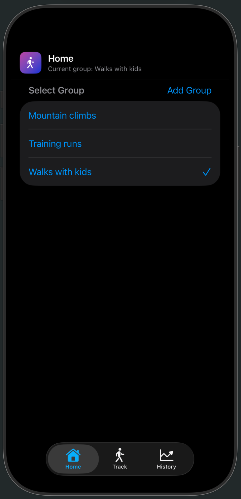
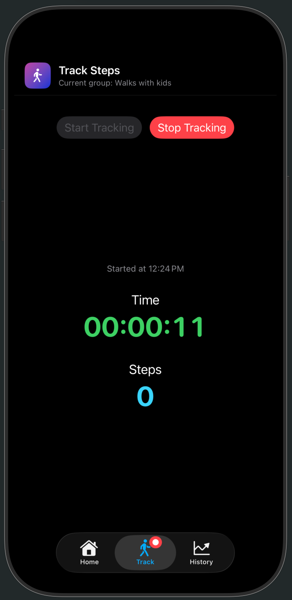
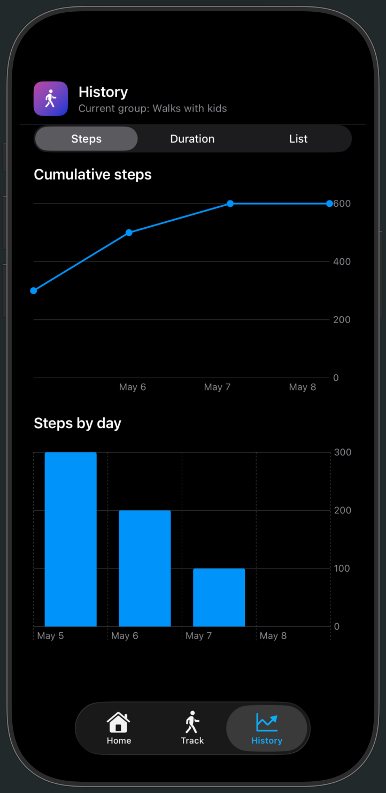

Highlights
Organize by group
Create named groups for different step-tracking routines like commutes, hikes, or family walks.

Live tracking
Track elapsed time and step count in real time while your session is active.

Visual history
Review cumulative trends and daily totals through list and chart views.

Privacy Policy
Effective date: May 8, 2026
Your data stays on your device
SimpleStepTracker does not collect, share, or sell any personal information. Walk groups and session history are stored locally on your device. The app requests Motion and Fitness access only to count steps during an active session. There are no accounts, no analytics, and no third-party SDKs.
If this policy changes, the effective date above will be updated.
Contact
Questions? abbyskocodes@gmail.com